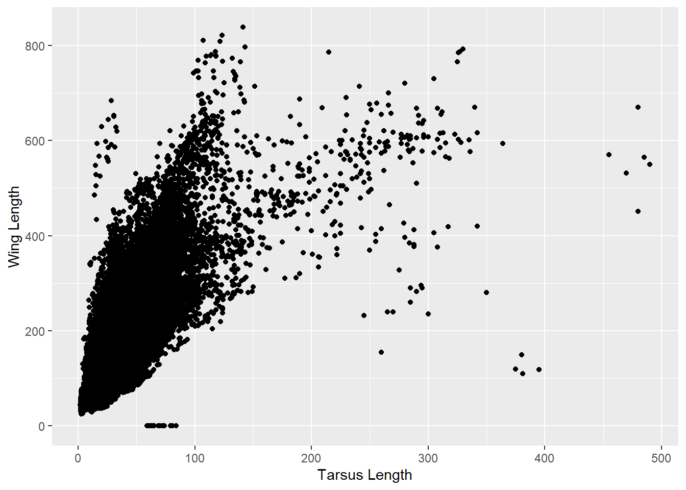
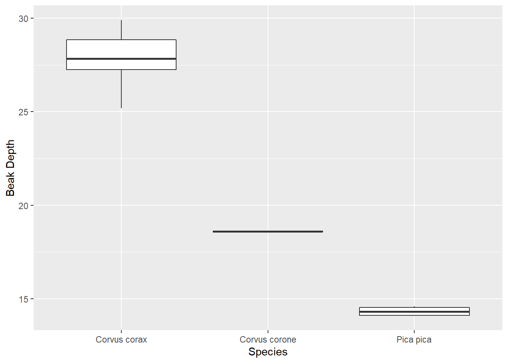
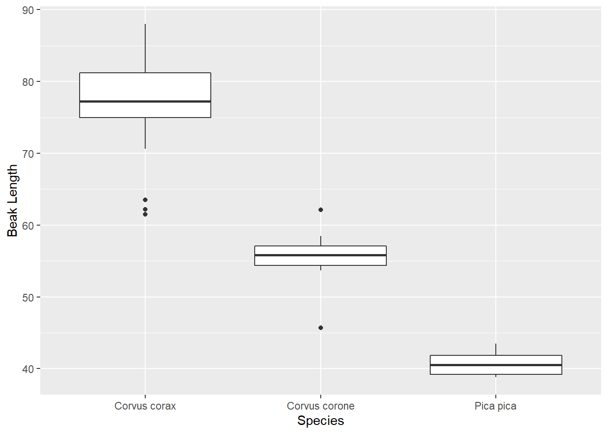

Last updated: 2022-11-24
Checks: 7 0
Knit directory: myworkflowr_test/
This reproducible R Markdown analysis was created with workflowr (version 1.7.0). The Checks tab describes the reproducibility checks that were applied when the results were created. The Past versions tab lists the development history.
Great! Since the R Markdown file has been committed to the Git repository, you know the exact version of the code that produced these results.
Great job! The global environment was empty. Objects defined in the global environment can affect the analysis in your R Markdown file in unknown ways. For reproduciblity it’s best to always run the code in an empty environment.
The command set.seed(20221124) was run prior to running
the code in the R Markdown file. Setting a seed ensures that any results
that rely on randomness, e.g. subsampling or permutations, are
reproducible.
Great job! Recording the operating system, R version, and package versions is critical for reproducibility.
Nice! There were no cached chunks for this analysis, so you can be confident that you successfully produced the results during this run.
Great job! Using relative paths to the files within your workflowr project makes it easier to run your code on other machines.
Great! You are using Git for version control. Tracking code development and connecting the code version to the results is critical for reproducibility.
The results in this page were generated with repository version 24d8acf. See the Past versions tab to see a history of the changes made to the R Markdown and HTML files.
Note that you need to be careful to ensure that all relevant files for
the analysis have been committed to Git prior to generating the results
(you can use wflow_publish or
wflow_git_commit). workflowr only checks the R Markdown
file, but you know if there are other scripts or data files that it
depends on. Below is the status of the Git repository when the results
were generated:
Untracked files:
Untracked: data/birds.csv
Note that any generated files, e.g. HTML, png, CSS, etc., are not included in this status report because it is ok for generated content to have uncommitted changes.
These are the previous versions of the repository in which changes were
made to the R Markdown (analysis/birds.Rmd) and HTML
(docs/birds.html) files. If you’ve configured a remote Git
repository (see ?wflow_git_remote), click on the hyperlinks
in the table below to view the files as they were in that past version.
| File | Version | Author | Date | Message |
|---|---|---|---|---|
| html | 1780482 | MooseyGoosey | 2022-11-24 | Build site. |
| html | 2a70b52 | MooseyGoosey | 2022-11-24 | Build site. |
| Rmd | 7fc51d0 | MooseyGoosey | 2022-11-24 | Publish initial files for my project |
Here I am practicing making an R Markdown. I will be using data from birds.csv for this document.
#Load in birds data
library(readr)
birds <- read_csv("data/birds.csv")Rows: 90371 Columns: 26
── Column specification ────────────────────────────────────────────────────────
Delimiter: ","
chr (11): Avibase.ID, Species1_BirdLife, Species2_eBird, eBird.species.group...
dbl (13): Data.type, Age, Beak.Length_Culmen, Beak.Length_Nares, Beak.Width,...
lgl (2): Locality, Country
ℹ Use `spec()` to retrieve the full column specification for this data.
ℹ Specify the column types or set `show_col_types = FALSE` to quiet this message.ggplot(birds, aes(birds$Tarsus.Length, birds$Wing.Length)) + geom_point() + xlab('Tarsus Length') + ylab('Wing Length')Warning: Removed 10328 rows containing missing values (geom_point).
Here we have plotted tarsus length against wing length. In this plot, we can see there is a general positive correlation between tarsus and wing lengths. However, there several individuals with a tarsus length between 50-100 and a wing length near 0, as well as several with a tarsus length > 400 and a dispraportionately small wing length.
birds %>%
filter(Tarsus.Length > 400) %>%
select(Species2_eBird, Tarsus.Length, Wing.Length) %>%
group_by(Species2_eBird) %>%
tally() %>%
print()# A tibble: 2 × 2
Species2_eBird n
<chr> <int>
1 Struthio camelus 4
2 Struthio molybdophanes 3There are several outliers within this dataset. The code above will select the outliers with a large Tarsus length and small Wing length.
birds %>%
filter(Wing.Length < 10) %>%
select(Species2_eBird, Tarsus.Length, Wing.Length) %>%
group_by(Species2_eBird) %>%
tally() %>%
print()# A tibble: 5 × 2
Species2_eBird n
<chr> <int>
1 Apteryx australis 4
2 Apteryx haastii 5
3 Apteryx mantelli 4
4 Apteryx owenii 4
5 Apteryx rowi 1The code above will identify outliers with a small tarsus length and a very small wing length.
To convert phenotypic measurements from mm to cm we can use the following function:
convert <- function(x){
z = x/10
return(z)
}
birds_cm <- convert(birds[,14:23])birds %>%
filter(Beak.Length_Culmen == max(birds$Beak.Length_Culmen, na.rm = TRUE)) %>%
select(Species2_eBird, Beak.Length_Culmen, Beak.Length_Nares) %>%
print()# A tibble: 1 × 3
Species2_eBird Beak.Length_Culmen Beak.Length_Nares
<chr> <dbl> <dbl>
1 Pelecanus conspicillatus 455 428birds %>%
filter(Beak.Length_Nares == max(birds$Beak.Length_Nares, na.rm = TRUE)) %>%
select(Species2_eBird, Beak.Length_Culmen, Beak.Length_Nares) %>%
print()# A tibble: 1 × 3
Species2_eBird Beak.Length_Culmen Beak.Length_Nares
<chr> <dbl> <dbl>
1 Pelecanus conspicillatus 455 428Pelecanus Conspicillatus has the longest beak. This is true both when measuring from the culmen or from the nares.
birds %>%
filter(Species2_eBird == 'Corvus corone' | Species2_eBird == 'Corvus corax' | Species2_eBird == 'Pica pica') %>%
ggplot(aes(Species2_eBird, Beak.Depth)) + geom_boxplot() + xlab('Species') + ylab('Beak Depth')Warning: Removed 48 rows containing non-finite values (stat_boxplot).
birds %>%
filter(Species2_eBird == 'Corvus corone' | Species2_eBird == 'Corvus corax' | Species2_eBird == 'Pica pica') %>%
ggplot(aes(Species2_eBird, Beak.Length_Culmen)) + geom_boxplot() + xlab('Species') + ylab('Beak Length')Warning: Removed 18 rows containing non-finite values (stat_boxplot).
The above boxplots will display the distributon of beak depth and lengths among crows, ravens an magpies. Here we can see that Crows have both the largest beak depth and length.
sessionInfo()R version 4.2.1 (2022-06-23 ucrt)
Platform: x86_64-w64-mingw32/x64 (64-bit)
Running under: Windows 10 x64 (build 19045)
Matrix products: default
locale:
[1] LC_COLLATE=English_United Kingdom.utf8
[2] LC_CTYPE=English_United Kingdom.utf8
[3] LC_MONETARY=English_United Kingdom.utf8
[4] LC_NUMERIC=C
[5] LC_TIME=English_United Kingdom.utf8
attached base packages:
[1] stats graphics grDevices utils datasets methods base
other attached packages:
[1] forcats_0.5.2 stringr_1.4.1 dplyr_1.0.10 purrr_0.3.5
[5] readr_2.1.3 tidyr_1.2.1 tibble_3.1.8 ggplot2_3.3.6
[9] tidyverse_1.3.2 here_1.0.1 workflowr_1.7.0
loaded via a namespace (and not attached):
[1] httr_1.4.4 sass_0.4.2 bit64_4.0.5
[4] vroom_1.6.0 jsonlite_1.8.3 modelr_0.1.9
[7] bslib_0.4.1 assertthat_0.2.1 getPass_0.2-2
[10] highr_0.9 googlesheets4_1.0.1 cellranger_1.1.0
[13] yaml_2.3.6 pillar_1.8.1 backports_1.4.1
[16] glue_1.6.2 digest_0.6.29 promises_1.2.0.1
[19] rvest_1.0.3 colorspace_2.0-3 htmltools_0.5.3
[22] httpuv_1.6.6 pkgconfig_2.0.3 broom_1.0.1
[25] haven_2.5.1 scales_1.2.1 processx_3.8.0
[28] whisker_0.4 later_1.3.0 tzdb_0.3.0
[31] timechange_0.1.1 git2r_0.30.1 googledrive_2.0.0
[34] farver_2.1.1 generics_0.1.3 ellipsis_0.3.2
[37] cachem_1.0.6 withr_2.5.0 cli_3.4.1
[40] magrittr_2.0.3 crayon_1.5.2 readxl_1.4.1
[43] evaluate_0.18 ps_1.7.2 fs_1.5.2
[46] fansi_1.0.3 xml2_1.3.3 tools_4.2.1
[49] hms_1.1.2 gargle_1.2.1 lifecycle_1.0.3
[52] munsell_0.5.0 reprex_2.0.2 callr_3.7.3
[55] compiler_4.2.1 jquerylib_0.1.4 rlang_1.0.6
[58] grid_4.2.1 rstudioapi_0.14 labeling_0.4.2
[61] rmarkdown_2.17 gtable_0.3.1 DBI_1.1.3
[64] R6_2.5.1 lubridate_1.9.0 knitr_1.40
[67] fastmap_1.1.0 bit_4.0.4 utf8_1.2.2
[70] rprojroot_2.0.3 stringi_1.7.8 parallel_4.2.1
[73] Rcpp_1.0.9 vctrs_0.4.2 dbplyr_2.2.1
[76] tidyselect_1.2.0 xfun_0.34